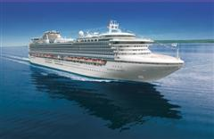
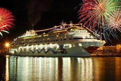

Cruzeiros

Cruzeiro Bella Mare
- Duração do cruzeiro: 9 noites
- Saída: 27 de novembro
- Chegada: 05 de dezembro
- Roteiro: Buenos Aires (Argentina), Rio de Janeiro (Rio de Janeiro), Ilha Grande (Rio de Janeiro), Copacabana (Rio de Janeiro), Búzios (Rio de Janeiro), Ilhabela (São Paulo), Punta del Este (Uruguai) e Buenos Aires (Argentina).
Cruzeiro Tudi Bom
- Duração do cruzeiro: 7 noites
- Saída: 07 de novembro
- Chegada: 15 de dezembro
- Roteiro: Salvador (Bahia), Búzios (Rio de Janeiro), Santos (São Paulo), Ubatuba (São Paulo), Copacabana (Rio de Janeiro) e Salvador (Bahia).

Cruzeiro Boum Dimas
- Duração do cruzeiro: 5 noites
- Saída: 29 de dezembro
- Chegada: 03 de janeiro
- Rio de Janeiro (Rio de Janeiro), Salvador (Bahia), Búzios (Rio de Janeiro), Copacabana (Rio de Janeiro), Ilha Grande (Rio de Janeiro) e Rio de Janeiro (Rio de Janeiro)